好久没更博了，太懒了~有错误记得告诉我哦🙇
相关基础理论知识
前向传播算法（Forward propagation）
作用：用于预测输出，计算Loss
举例：
前向传播公式（以$sigmoid$函数为例）：
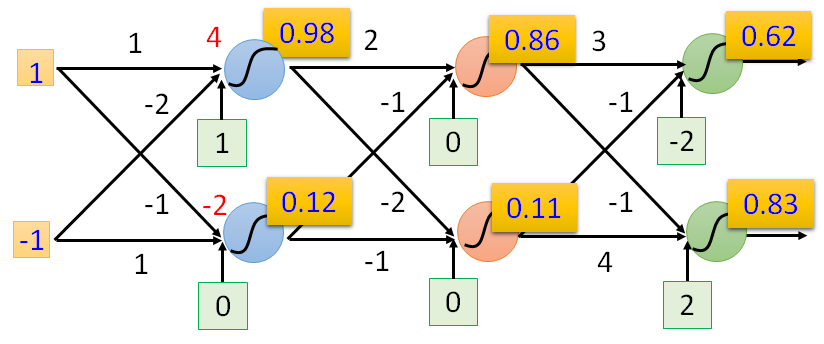
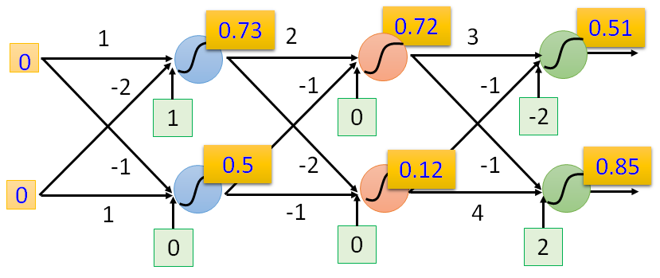
上面两个例子的结果：
反向传播算法（Back propagation）
作用：用于更新模型参数
预备知识：链式求导法则（Chain Rule）
Case 1：$z=h(y), y= g(x)$
$\Delta x\to\Delta y\to\Delta z$，此时$\cfrac{dz}{dx}=\cfrac{dz}{dy}\cfrac{dy}{dx}$
Case2：$z=k(x,y),x=g(s),y=h(s)$
$\Delta s\to\Delta x\to\Delta z$
$\Delta s\to\Delta y\to\Delta z$，此时$\cfrac{dz}{ds}=\cfrac{\partial z}{\partial x}\cfrac{dx}{ds}+\cfrac{\partial z}{\partial y}\cfrac{dy}{ds}$
反向传播算法（Back propagation）
损失函数：
其中
- n：表示每个样例
- N：表示样例的总数
- $l^{(n)}(\theta)$ ：表示第$n$个样例的损失值
- $L(\theta)=\sum_{n=1}^{N}l^{(n)}(\theta) $：表示N个样例的总损失值
- $\theta=\{w1,w2,w3,w4,…,b1,b2,…\}$：为深度神经网络的参数
这个例子的意思是通过Batch_size=N的一个batch来更新一次所有参数 $\theta$
为了问题简单化，抽取其中的一个样本来计算 $\cfrac{\partial l(\theta)}{\partial w}$，会计算这个，其他样本同理也可以计算，最后加起来就可以得到 $\cfrac{\partial L(\theta)}{\partial w}$ ，从而去更新参数 $w$ 。
根据链式求导法则， $\cfrac{\partial l}{\partial w}=\cfrac{\partial l}{\partial z}\cfrac{\partial z}{\partial w}$
我们可以先通过下图整体性的理解一下反向传播算法
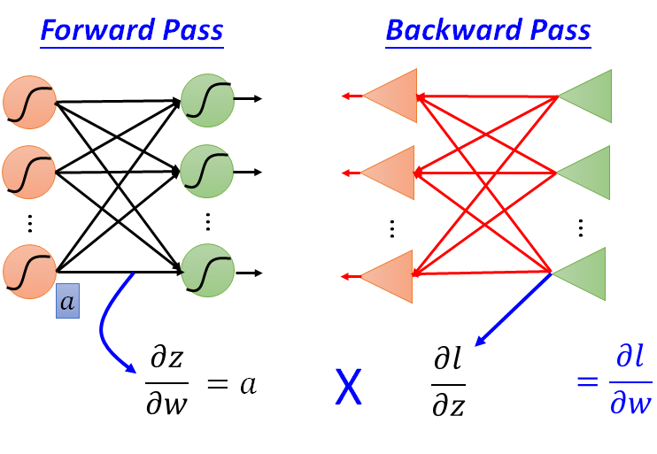
反向传播算法虽然名为“反向传播”，但是实际上是正着需要计算一遍，反着再计算一遍
正向计算时，我们能得到所有的 $\cfrac{\partial z}{\partial w}$，都等于当前层的输入值，反向计算时，计算的是$\cfrac{\partial l}{\partial z}$，然后将他们两个相乘就能得到$\cfrac{\partial l}{\partial w}$，这就是总体的思想，至于怎么正向计算求$\cfrac{\partial z}{\partial w}$和反向计算求$\cfrac{\partial l}{\partial z}$，往下看~
其中反向计算部分 $\cfrac{\partial l}{\partial z}$待会儿再讨论，因为它比较麻烦，我们先计算正向计算部分$\cfrac{\partial z}{\partial w}$
正向计算部分：
看下面这个网络，我们能轻易地计算出 $\cfrac{\partial z}{\partial w_1}=x_1 ，\cfrac{\partial z}{\partial w_2}=x_2$
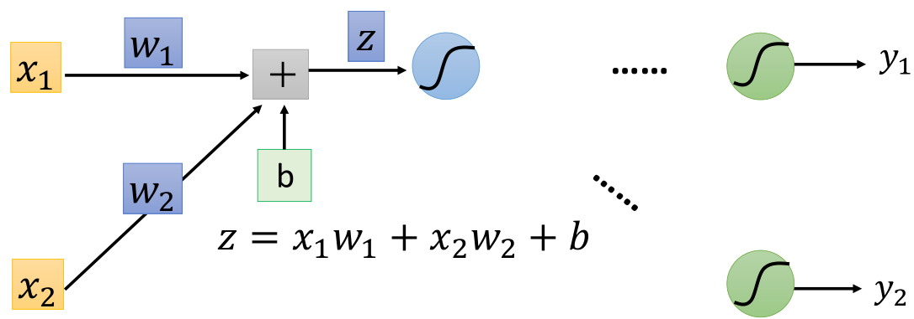
而且我们还能发现，其实$\cfrac{\partial z}{\partial w}$的值就是该层神经元的输入值，因此如果带入一些数据进去计算，可以得到下图
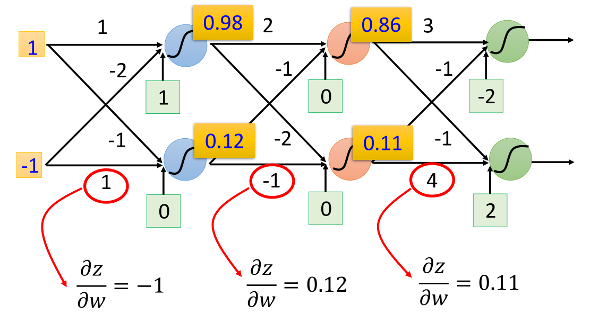
可以看到，每一层的$\cfrac{\partial z}{\partial w}$都等于该层的输入值
上图在计算时，激活函数采用 $sigmoid$函数
反向计算部分：
计算完了$\cfrac{\partial z}{\partial w}$，再来计算$\cfrac{\partial l}{\partial z}$，同样根据链式求导法则， $\cfrac{\partial l}{\partial z}=\cfrac{\partial l}{\partial a}\cfrac{\partial a}{\partial z}$，其中$a=\sigma(z)$
上式中，$\cfrac{\partial a}{\partial z}=\sigma’(z)=\sigma(z)(1-\sigma(z))$ 是一个可以算出来的数值，而$\cfrac{\partial l}{\partial a}$ 怎么来计算呢？我们先来看看下面这张图
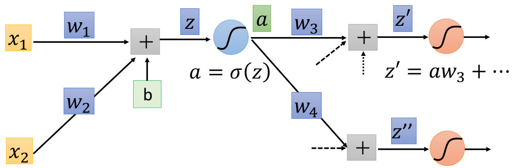
这张图中，第二层的两个神经元加权求和后的值分别为 $z’$ 和 $z’’$
通过这张图，根据链式求导法则我们能计算出$\cfrac{\partial l}{\partial a}=\cfrac{\partial l}{\partial z’}\cfrac{\partial z’}{\partial a}+\cfrac{\partial l}{\partial z’’}\cfrac{\partial z’’}{\partial a}$，而其中的 $ \cfrac{\partial z’}{\partial a}=w_3,\cfrac{\partial z’’}{\partial a}=w_4$ ，现在假设$\cfrac{\partial l}{\partial z’},\cfrac{\partial l}{\partial z’’}$已知，那么$\cfrac{\partial l}{\partial z}$也就计算出来了
(算法精华部分)可以将上式理解成一个线性的反向传播的网络（此算法因此得名），如下图所示
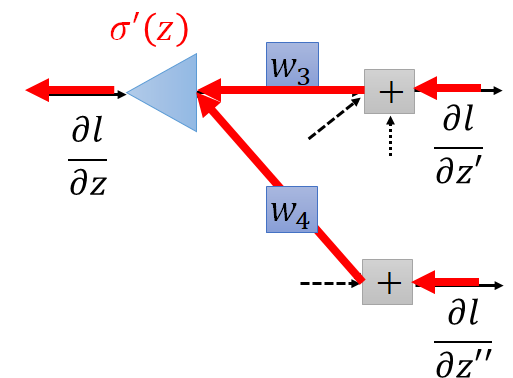
为什么这个网络是线性的呢？
- 因为$\sigma’(z)$是一个常数，在前向传播时 $z$ 的值已经被确定了，因此$\sigma’(z)=\sigma(z)(1-\sigma(z))$也是一个常数值，所以$\cfrac{\partial l}{\partial z}$相当于 $\cfrac{\partial l}{\partial z’},\cfrac{\partial l}{\partial z’’}$加权求和后乘了一个常数，也就是线性变换啦
回头看看我们的目标，此时$\cfrac{\partial l}{\partial w}=\cfrac{\partial l}{\partial z}\cfrac{\partial z}{\partial w}$已经可以计算出来了，结束！那是不可能的。。。前面是假设$\cfrac{\partial l}{\partial z’}，\cfrac{\partial l}{\partial z’’}$ 已知，但实际未知，现在就要来求他们了，可以分为以下两种情况
Case1：刚才那张图的第二层就是输出层，也就是下图的情况
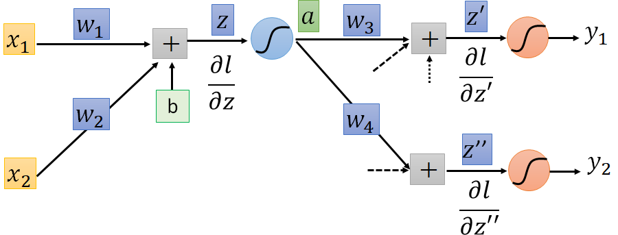
此时， $\cfrac{\partial l}{\partial z’}=\cfrac{\partial l}{\partial y_1}\cfrac{\partial y_1}{\partial z’}，\cfrac{\partial l}{\partial z’’}=\cfrac{\partial l}{\partial y_2}\cfrac{\partial y_2}{\partial z’’}$，其中 $\cfrac{\partial l}{\partial y_1}, \cfrac{\partial l}{\partial y_2}$很好求，$\cfrac{\partial y_1}{\partial z’}=\sigma’(z’)$，搞定收工！
Case2：刚才那张图的第二层不是输出层（此时是一个深度网络），也就是下图的情况
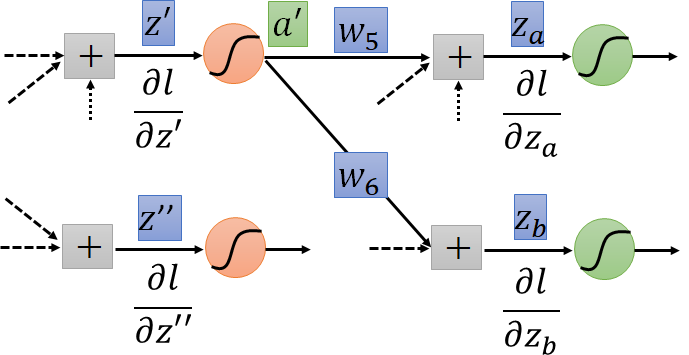
此时
把上式转换成反向传播的形式
（精华啊）也就是说，跟刚才一样，将上面的图看成一个线性的反向传播的网络，如下图所示
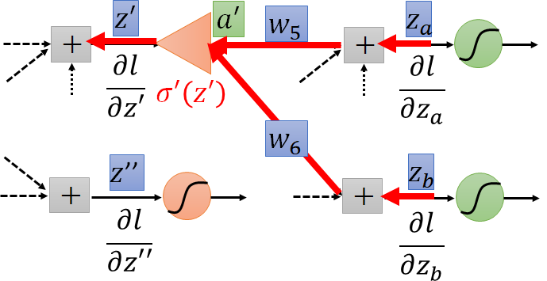
我们可以重复上面的步骤，直到到达输出层，就转换成了Case1的情况
（精华中的精华啊）事实上没必要向刚才推导的那样，从前往后计算$\cfrac{\partial l}{\partial z}$，我们可以从后往前计算，就像下面这张图一样
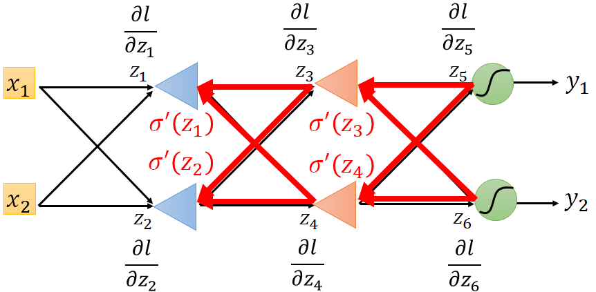
综上，通过前面的正向计算和反向计算分别得到所有的 $\cfrac{\partial z}{\partial w}$和$\cfrac{\partial l}{\partial z}$，再将他们相乘就得到了$\cfrac{\partial l}{\partial w}$
bias的更新同理，只是有一点小区别是$\cfrac{\partial z}{\partial w}$每次都是等于该层神经元的输入，而$\cfrac{\partial z}{\partial b}$每次都是等于1的（这个求导很简单，看下面的公式），也就是说，只用计算$\cfrac{\partial l}{\partial z}$就能知道bias的所有梯度值了，从而去更新它
反向传播算法练习
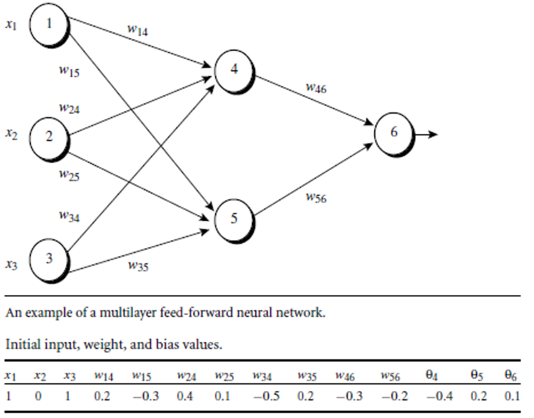
其中
- lr=0.9
- Loss=MSE
- 激活函数：sigmoid
- 这个样例的label=1
参考答案
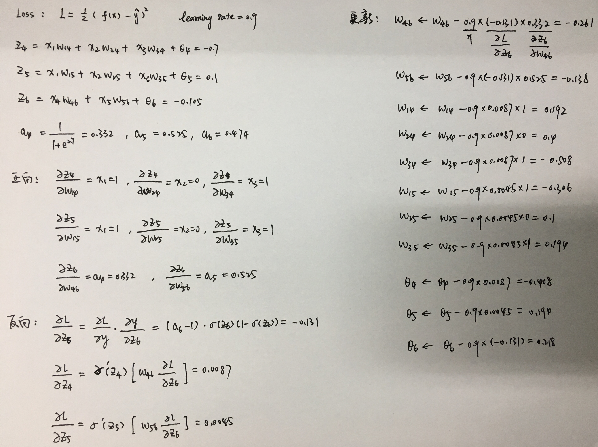
反向传播算法的实现
实现步骤：
- 步骤一：定义一个Network的类，里面包含实现神经网络训练和预测时的各个方法
- 步骤二：写一个demo来验证上面的Network模块是否工作正常
步骤一
首先导入需要使用到的标准库random.py和第三方库numpy.py。其中random库用来打乱训练数据，随机生成mini_batch（本次代码将使用SGD算法来训练模型）。
1 | #coding=utf-8 |
接下来定义类的构造方法：
1 | class Network(object): |
其中：
sizes：一个列表，表示网络模型每一层的神经元个数，例如
[784, 20, 10]后面的步骤二会使用mnist手写数字识别数据集来验证这个类，所以输入神经元的个数为784，输出为10，中间的隐藏层可以自定义，不同的隐藏层结构会导致模型有不同的性能。
num_layers：神经网络的层数
weights：一个列表，表示每两层神经元之间的权重值，初始时为随机数
例如：当网络的sizes为
[784, 20, 10]时，weights中一共有两个元素，它们的形状分别是[20, 784]，[10, 20]biases：一个列表，表示每层神经元的权重值，初始时为随机数
例如：当网络的sizes为
[784, 20, 10]时，biases中一共有两个元素，它们的形状分别是[20, 1]，[10, 1]
接下来定义两个待会儿会用到的数学函数，他们分别是sigmoid函数和sigmoid的一阶导数：
1 | def sigmoid(self, z): |
接下来定义全向传播算法方法：
1 | def feedforward(self, a): |
例如：在手写数字识别数据集中，输入值a是形状为
[784， 1]的矩阵，输出结果为[10, 1]的矩阵
接下来定义SGD算法的方法：
1 | def SGD(self, |
其中：
- training_data：一个列表，里面存放每一个训练样本，而每一个训练样本（如：
training_data[0]）又是一个元祖，里面包含两个元素，第一个是样本的属性，第二个是标签。以mnist数据集为例，training_data[0][0]和training_data[0][1]形状分别为[784, 1]和[10, 1]。（采用one-hot编码） - epochs：训练的轮数
- mini_batch_size：采用SGD算法时的mini batch大小
- eta：学习率
- test_data：测试数据，每epoch训练结束后，会使用测试数据测试一次正确，数据格式与训练数据类似
在上面的SGD算法中，第21行调用了一个方法：self.update_mini_batch(mini_batch, eta)，它使用一个mini_batch的数据来更新参数。除此之外，25行还调用了一个方法：self.accuracy(test_data)，这个方法比较简单，放在最后去讲。
接下来，先定义self.update_mini_batch(mini_batch, eta)方法：
1 | def update_mini_batch(self, mini_batch, eta): |
该方法中，有几个变量需要注意：
delta_nabla_w和delta_nabla_b，他们是通过mini batch中的某一个样本计算出的每个需要更新的参数的梯度，但是我们需要使用整个mini batch对参数更新，所以使用nabla_w和nabla_b记录每个需要更新的参数的梯度的总和，相当于前面理论部分的$\cfrac{\partial l(\theta)}{\partial w}$和$\cfrac{\partial l(\theta)}{\partial b}$，最后再把这个总和除以mini batch的大小，得到平均梯度，再更新所有参数（对应最后两行代码）。
在上面的方法中，第7行调用了一个方法：self.backprop(x, y)，这就是今天的主角，反向传播算法，它的作用是通过一个样本计算出所有参数的梯度，定义如下：
1 | def backprop(self, x, y): |
其中：
nabla_w和nabla_b记录了每个需要更新的参数的梯度，他的形状与模型的参数的形状相同。
这里的
nabla_w和nabla_b与上一个方法的意义不同，这里的是只记录了通过一个样本所计算出的梯度，而上一个方法中记录的是通过一个mini batch中的所有样本所计算出的梯度的总和。
整个方法分为两个部分：前向计算和反向计算，与上面的理论知识一致，代码只是将公式翻译了一遍。
前向计算：计算出所有的$\cfrac{\partial z}{\partial w}$ ，都等于当前层的输入值，对应于代码中的列表activations
反向计算：计算出所有的$\cfrac{\partial l}{\partial z}$，对应于代码中的变量delta
然后将他们两个相乘就能得到$\cfrac{\partial l}{\partial w}$，对应于代码中的列表nabla_w，而$\cfrac{\partial l}{\partial b}$ 与$\cfrac{\partial l}{\partial z}$ 相等，对应的是列表nabla_b
注意：最后一层的梯度计算方法与前面的层不同，而且这里计算最后一层的梯度时使用的损失函数是MSE而不是交叉熵。如果要使用交叉熵，只需要改第17行的代码即可。
最后还差一个方法：用于计算测数据的正确率
1 | def accuracy(self, test_data): |
注意：这里的测试数据的label没有使用one-hot编码，是一个数字
至此，network模块定义完成。
步骤二
接下来，写一个demo来验证上面的Network模块是否工作正常
这个demo使用了mnist数据集，所以我找了一个加载mnist数据集的模块，上面有很详细的注释，直接贴上代码：
1 | # Standard library |
对应的数据集的下载地址：https://pan.baidu.com/s/1b-29c3GwNVL5nvqRLEnznw 密码:vycx
开始写demo，三行代码搞定：
1 | #coding=utf-8 |
上我定义的网络结构是一个三层的神经网络[784, 20, 20, 10]，可以随意更改，不同的网络结构有不同的预测效果。
运行结果：
1 | Epoch 0: accuracy = 0.1172 |
源码地址：